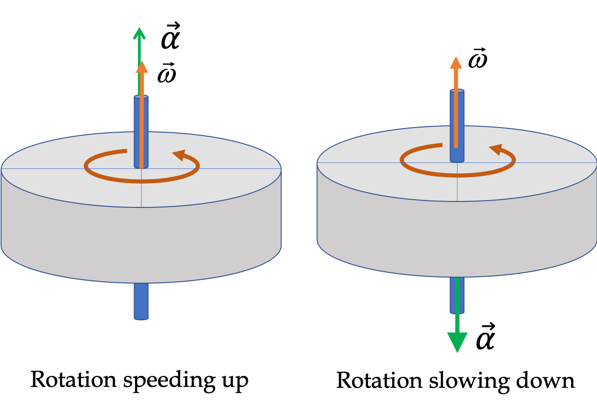
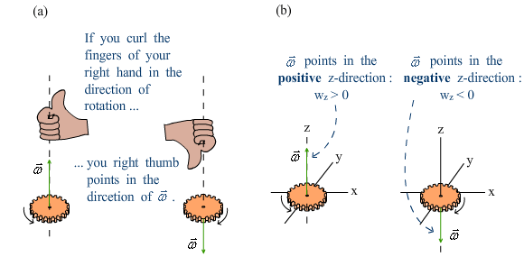

This topic introduces the angular equivalents of displacement, velocity, and acceleration, which describe rotational motion in the same way their linear counterparts describe straight-line motion.
Just as linear velocity tells you how fast and in what direction an object moves along a path, angular velocity tells you how fast and in which direction an object rotates. A positive value typically represents counterclockwise rotation, while a negative value represents clockwise rotation.
The angular velocity vector is perpendicular to the plane of rotation because it shows which axis the object is spinning around. When something rotates, like a spinning disk, every point on it moves in a circle in the flat plane of the disk. But to describe the rotation fully, we need to know not only how fast it spins but also the direction of the spin axis. That’s why we use a vector pointing straight along the axis the object is rotating around. The direction is set by the right-hand rule
Angular velocity and angular acceleration are vectors. Their directions follow the right-hand rule: if you curl the fingers of your right hand in the direction of rotation, your thumb points in the direction of the angular vector.
Suppose an object's angular velocity is given by the function \( \omega(t) = 3t^2 + 2 \), where \( \omega \) is in rad/s and \( t \) is in seconds.
Find:
So between 0 and 3 seconds, the object rotates through 33 radians, and its angular acceleration at \( t = 3 \, \text{s} \) is \( 18 \, \text{rad/s}^2 \).
Understanding angular displacement, velocity, and acceleration is essential for describing rotational motion. These variables form the foundation for all rotational dynamics.